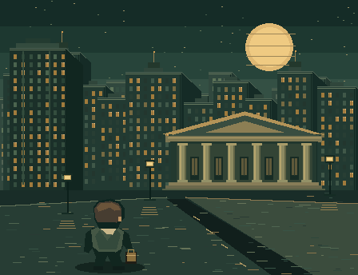

Trade in a changing economy
Follow companies, manage positions and weigh exposure to market cycles. Different economic timelines are intended to change which decisions look promising.
A financial career and life simulation RPG

You can beat the market. You can’t beat time.
One dusty suit. One unpredictable economy. One life.
Start from nothing in an evolving American economy. What you do for work, how much risk you take and who you make time for can shape the years that follow.
Follow companies, manage positions and weigh exposure to market cycles. Different economic timelines are intended to change which decisions look promising.
Work through assignments inspired by real finance roles, from valuing a business to evaluating risk and making sense of company results.
Explore districts, form relationships and make trade-offs between income, time and the life you want to lead.
Release status
Both editions are in development. Play and download links will appear here after the published builds are verified.
Browser demo
A free introduction designed to let you try the early decisions that connect work, investing and everyday life.
Not yet released
Browser demo detailsDownloadable game
The complete financial career and life simulation RPG. Windows is the first target. Supported systems and save transfer instructions will be listed after testing.
Not yet released
Downloadable game detailsPlayer guide
Both editions are in development.
Check the release status for confirmed browser and download links. The notes here describe the intended experience.
Financial Academy
Three fictional examples connect finance concepts with decisions you might face in Life on a Margin. No account is needed.
A shop records $12,000 in sales and $9,000 in operating expenses. It has collected $8,000 from customers. It has paid all $9,000 of expenses. Can it cover a $500 bill with cash generated this period alone?
It earns $3,000 on its income statement, but the specified operating cash flows are negative $1,000. Cash generated this period does not cover the bill. A beginning cash balance could still cover it.
Two fictional accounts start at $1,000 and credit a fixed 5% once a year for two years. One keeps all the interest in the account. The other pays it out every year. How much total interest does each earn?
Keeping the interest earns $50 the first year and $52.50 the second, for $102.50 total. Taking it out earns $50 each year, for $100 total. The difference is interest earned on the first year's interest.
Two players each have a $1,000 portfolio. One puts it all in one fictional company. The other holds $250 each in four companies. If only the shared company falls 20%, what happens to each portfolio?
The first loses $200 (20%) and the second loses $50 (5%). If several holdings fall together, the second portfolio can still lose more. Spreading exposure can reduce the impact of a single company’s setback.
Follow tested milestones for the game and site. Check release status to see what’s available to play.
An internal browser build restored progress after a restart. The save exported by that build also restored the same game state in a desktop save test. Both editions are still in development.
Read the player guideTry three fictional exercises on cash flow, compounding and portfolio risk, each with a worked answer. The player guide explains the two editions and the planned save transfer process.
Try the exercisesThe first site update introduced the game, the two planned editions and a player FAQ. The illustration on the home page is original concept art.
Read about the gameA development case study on connecting a fictional economy to the decisions a player makes during one life.
Passing an internal financial case earns income. Repeated strong work can raise the rate for later cases. The household uses that same checking balance for rent, utilities and routine expenses. Failed payments become balances the player can settle later.
The clock drives resident schedules as well as household bills. The internal build was tested for replay and save recovery. In a browser check, the player closed the session, resumed the same universe and exported a save that the desktop store could restore.
Klord Fernandez Cayetano leads the product direction and creative decisions. AI-assisted engineering is used to develop and test the implementation. Website pull requests run smoke and browser checks before merging.
Read verified milestonesThese results describe internal milestones. Both game editions are still in development.
FAQ
For players following the project’s development.
Neither edition has been released. The release status section will link to each edition when it is publicly available.
The First Trade is intended for supported desktop browsers, with Windows prioritized for the downloadable game. This website works on smaller screens. Game compatibility and controls will be published after testing.
Save export and transfer are planned. Instructions will appear after the transfer has been verified with both released editions.
This site uses keyboard-accessible navigation and expandable questions, with no autoplay media. Information about game controls and accessibility will be published after testing.
The game uses fictional scenarios for learning and entertainment. Market outcomes and assignments are part of the simulation.
Use these checks if you have trouble reading, navigating or finding the current release status.
The navigation links scroll to sections on this page. To skip the header with a keyboard, press Tab once from the top and select “Skip to content.” Use Enter or Space on a focused FAQ or Academy question to toggle the answer.
Go to the FAQReload if an image fails to appear. The concept illustration has a text description, and the Academy exercises work without JavaScript. Use your browser’s zoom controls to enlarge text.
Go to the AcademyCheck this site’s release status for official downloads and play links. When builds are available, this site will include supported browsers and systems, along with save backup and transfer instructions.
Check release status